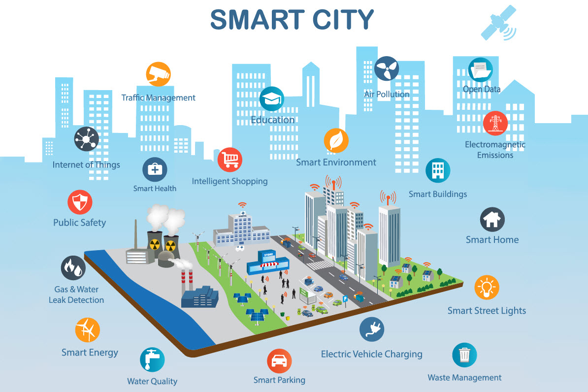
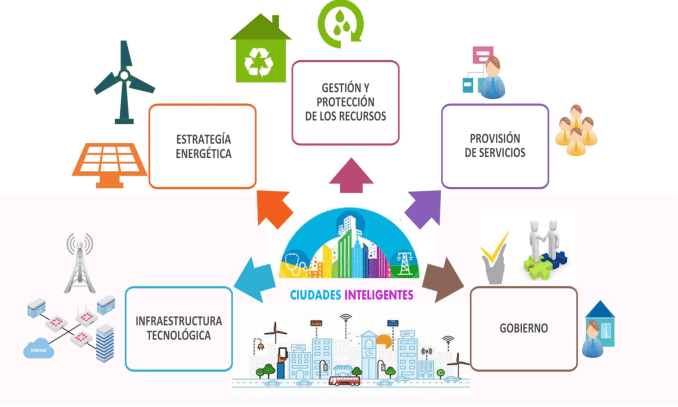

Las bases de datos en ciudades inteligentes gestionan grandes volúmenes de datos (Big Data) provenientes de sensores, dispositivos IoT y sistemas urbanos para mejorar la calidad de vida.
En ciudades inteligentes, las bases de datos recopilan y procesan datos de dispositivos IoT, sensores y sistemas urbanos. Esto permite optimizar servicios como transporte, energía y seguridad, además de integrar tecnologías emergentes como el Big Data y el Blockchain.
Tendencias Actuales
Integración de IoT: Sensores conectados recopilan datos sobre tráfico, consumo energético y calidad del aire.
Bases de Datos Distribuidas: Uso de tecnologías como Blockchain para mejorar la seguridad y la transparencia en el manejo de datos urbanos.
Análisis Predictivo: Implementación de algoritmos avanzados para anticipar problemas como congestión vehicular o emergencias climáticas.
Edge Computing: Procesamiento de datos directamente en el dispositivo para reducir la latencia.
Proyección Futura
Crecimiento exponencial de los datos urbanos impulsará sistemas más automatizados y eficientes.
Bases de datos híbridas que combinen datos estructurados y no estructurados para una gestión más integral.
Conclusión
El uso de bases de datos en ciudades inteligentes mejora la calidad de vida al automatizar y optimizar procesos urbanos. A medida que las ciudades evolucionan, estas bases desempeñarán un papel central en la gestión eficiente y sostenible de los recursos.